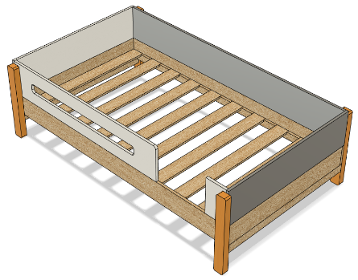

OTROS
Por último, realizamos los planos del producto y planteamos diversas alternativas de acabados naturales, esto con el objetivo de reducir el uso de productos tóxicos contra el ambiente.
Junto a mi compañero nos encargamos de la parte metodológica del producto, el diseño y la investigación de mercado. También, realizamos una presentación a CITEmadera con oportunidades y hallazgos que encontramos en el proceso de investigación, esto con el fin de que la institución pueda aprovecharlas.
Fuimos parte de un equipo en CITEmadera,. El objetivo del proyecto fue diseñar un juego de mobiliarios utilizando madera de plantación de Ucayali, a su vez, estos serían fabricador por maestros artesanos.


PASANTÍAS


Gracias a CITEmadera pude obtener un mayor conocimiento sobre las diversas especies de madera y sus propiedades, esto me ayudó a poder explorar el desenvolvimiento del material en los muebles.
MOBILIARIOS
Productos+Diseños
Contacto
Inicio